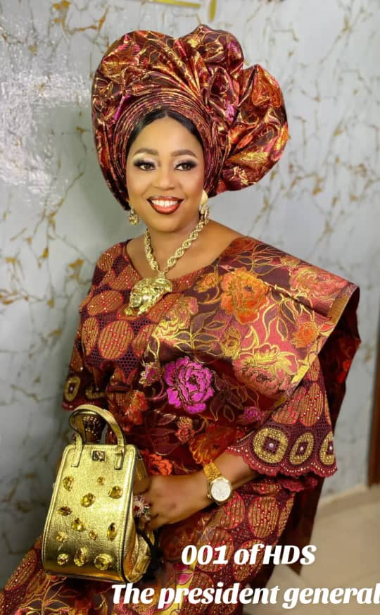

..refined in humility, united in strength..
Together in Friendship,
United in Purpose,
Stronger in Impact.
Humble Diamond Sisters Club of Nigeria is a women-focused social club bringing sisters together in friendship, unity and mutual support — while working, hand in hand, to lift up women in our communities.
Est. November 20th, 2025 · Ikorodu, Lagos
President's Welcome Address

On behalf of every sister who calls the Humble Diamond Sisters Club home, welcome. What began as an amalgamation of like-minded women from the Successful Sisters Club has grown into a family bound by humility, compassion and a shared determination to do good.
We are, first and foremost, sisters — women who show up for one another in celebration and in difficulty. But our sisterhood does not end at our own circle. Through our Women Poverty Alleviation Program, we carry that same spirit of support into the wider community, standing with women and families who need a helping hand.
Whether you are here to learn about our work, connect with an executive, or explore how to partner with our NGO, I invite you to look through our story and reach out. There is always room around this table for one more sister.
What Holds Us Together
Four commitments guide everything we do as a club — from our monthly gatherings to our community outreaches.
Friendship
Genuine bonds between women, built on trust, warmth and shared experience.
Unity
Standing together as one body, no matter our individual differences.
Mutual Support
Showing up for one another — in joy, in loss, and everything between.
Empowerment
Helping women and families rise, through our Poverty Alleviation Program.
HDS Women Poverty Alleviation Program
Our subsidiary initiative, dedicated to easing poverty and empowering women in our communities.